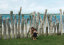
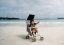

2000年5月20日14時30分撮影
あやめ池遊園地内にある動物園で、大好きな「ぞうさんと」記念撮影。
お歌の「ぞうさん」も、ずいぶん上手に歌えるようになりました。2000年5月5日19時27分撮影
出発前のひととき。パパは一人カジノへ行ってしまい、由起子とママは
退屈であった。サングラス、、、なかなか似合うでしょ！2000年5月5日15時47分撮影
ヌメア市街地にある「サン・ジョセフ大聖堂」を見学。荘厳なイメージです。2000年5月5日8時32分撮影
旅行最終日（ヌメア）の朝。朝食後の散歩は海岸沿いを歩きました。
風がとっても心地良かったです。2000年5月5日7時14分撮影
早朝からホテルの洗面台で行水です。何故かと言うとちょっぴりウンチが
ゆるくなってて、オシリが赤～く荒れていたからなの。「気持ちイイィー！」2000年5月3日16時40分撮影
由起子はシンディという現地の女の子と仲良しになり、何度も何度も
「ダッチュー」と言って両手を広げ、抱っこをせがみます。2000年5月3日11時17分撮影
朝食後のお散歩。。。途中、クトビーチでメラネシアダンスが見れた。
ママは由起子を抱っこして、踊りの輪に入れてもらいましたよ。
2000年5月2日10時52分撮影
お天気も良いので「島内観光」に参加。ここはバオ村にあるカトリック
宣教師上陸の記念碑があるところ。海がとってもきれいです！2000年5月2日10時00分撮影
クト湾の“ピローグ”に乗る。海を怖がってた由起子なのに大はしゃぎ。
興奮しすぎて海に落っこちるんじゃないかとママたちはハラハラした。
2000年5月1日10時07分撮影
イル・デ・パン島での２日目。朝食後、クト湾を散歩する。
ビーチはとっても細かい砂で、海水を含むと粘土のようになります。